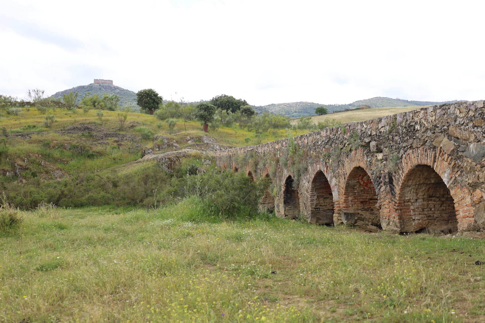
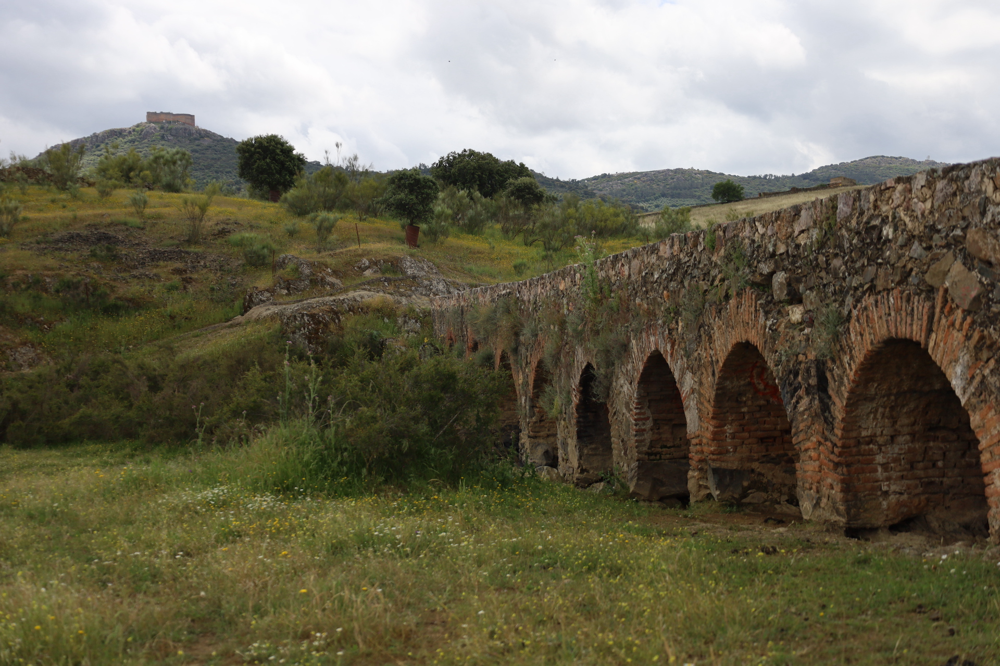
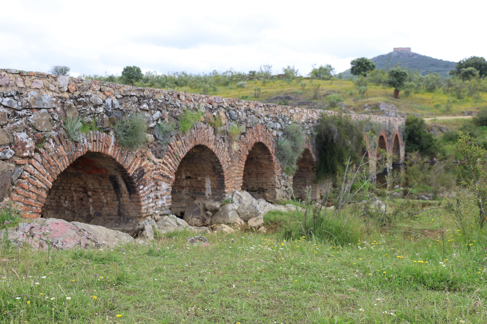
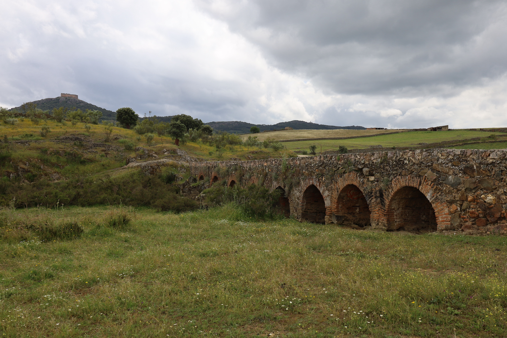

Puente Viejo
Antiguo paso sobre el arroyo Pelochejo que une Herrera con Castilblanco y los poblados del embalse.
El Puente Viejo es uno de los elementos patrimoniales más conocidos de Herrera del Duque. Situado sobre el arroyo Pelochejo, muy cerca del casco urbano, este puente ha servido durante siglos como vía de comunicación para vecinos, ganaderos y agricultores.
Aunque popularmente muchas personas lo conocen como “puente romano”, no existe constancia de que su origen sea romano. Los estudios y descripciones conservadas lo identifican como un puente de origen medieval.
Su estructura destaca por contar con ocho arcos de medio punto de diferentes tamaños, adaptados al terreno y al cauce del arroyo. Además, conserva dos tajamares triangulares, construidos para reducir la fuerza del agua durante las crecidas.
El puente combina distintos materiales tradicionales de la zona, como mampostería, pizarra, ladrillo y mortero. Los arcos están realizados en ladrillo, mientras que en otras partes de la estructura se pueden observar piedras irregulares y restos de su antigua calzada empedrada.
El Puente Viejo tiene aproximadamente 49 metros de longitud y una anchura cercana a 1,60 metros. Sus dimensiones muestran que fue concebido para el paso de personas, animales y pequeñas cargas, en una época en la que este tipo de caminos eran fundamentales para la vida diaria.
Durante mucho tiempo, este puente fue utilizado para comunicar fincas, caminos y zonas de pasto de los alrededores. Incluso en la actualidad sigue siendo un lugar vinculado al paso de ganado y a las rutas de senderismo.
Además de su valor histórico, el Puente Viejo destaca por su entorno natural. El sonido del agua, la vegetación cercana y la tranquilidad del paisaje convierten este rincón en uno de los lugares más atractivos para pasear, hacer fotografías y descubrir una parte importante de la historia de Herrera del Duque.
Visitar el Puente Viejo es acercarse a una construcción que ha permanecido en pie durante siglos y que todavía hoy sigue formando parte de la identidad de Herrera del Duque.
Galería de fotos



